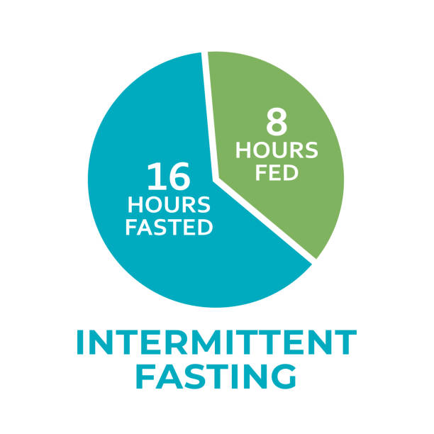

Intervallfasten
Eine zusätzliche Stellschraube, die nicht nur beim Abnehmen hilft – sondern auch die Regeneration und das Energielevel spürbar verbessert.

Was ist Intervallfasten?
Intervallfasten ist keine Diät im klassischen Sinne, sondern ein Essmuster. Du isst innerhalb eines bestimmten Zeitfensters und fastest den Rest des Tages. Die bekannteste Variante ist die 16:8-Methode: 16 Stunden fasten, 8 Stunden essen.
Das klingt erst streng – ist es aber nicht. Wenn du um 20 Uhr deine letzte Mahlzeit zu dir nimmst und erst wieder um 12 Uhr mittags isst, hast du die 16 Stunden bereits durch die Schlafzeit überbrückt.
Warum nimmst du damit ab?
Vereinfacht erklärt: Während der Fastenphase greift der Körper zunächst auf seine kurzfristigen Energiespeicher zurück – und im weiteren Verlauf vermehrt auf die Fettreserven. Je länger du fastest, desto effizienter wird dieser Prozess.
Gleichzeitig kommt der Verdauungstrakt zur Ruhe. Diese Regenerationsphase nehmen viele Menschen als gesteigertes Wohlbefinden und höheres Energielevel wahr – besonders nach ein paar Wochen Eingewöhnung.
Wie fängst du an?
Starte nicht mit 16 Stunden, wenn du bisher immer gefrühstückt hast. Schiebe das Frühstück schrittweise nach hinten – um eine Stunde pro Woche. Dein Körper gewöhnt sich daran, und nach kurzer Zeit wirst du feststellen, dass du morgens gar keinen Hunger mehr hast.
Wichtig: Während der Fastenphase sind Wasser, ungesüßter Tee und schwarzer Kaffee erlaubt. Kalorien brechen das Fasten.
Für wen ist es geeignet?
Intervallfasten ist für die meisten gesunden Menschen gut geeignet. Wenn du jedoch unter bestimmten gesundheitlichen Bedingungen leidest – insbesondere Diabetes oder hormonelle Erkrankungen – solltest du vorher ärztlichen Rat einholen.
Kombiniert mit Low Carb entfaltet Intervallfasten seine größte Wirkung. Beides zusammen ist ein starkes Duo für nachhaltige Gewichtsabnahme.
Das Wichtigste auf einen Blick
Das Essfenster
Beim 16:8 isst du innerhalb von 8 Stunden, z. B. von 12 bis 20 Uhr. Der Rest ist Fastenzeit – Wasser und ungesüßter Tee sind erlaubt.
Mehr Energie
Viele berichten nach der Eingewöhnung von deutlich stabilerer Energie über den Tag – ohne das bekannte Mittagstief.
Autophagie
Ab ca. 14–16 Stunden Fasten aktiviert der Körper Reinigungsprozesse auf Zellebene – gut dokumentiert, wissenschaftlich anerkannt.